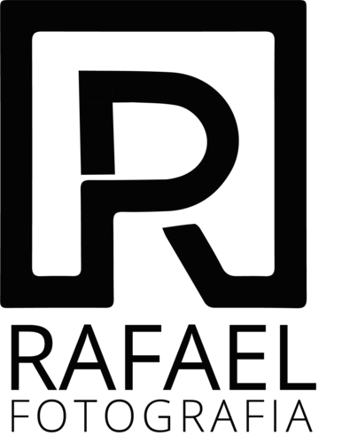
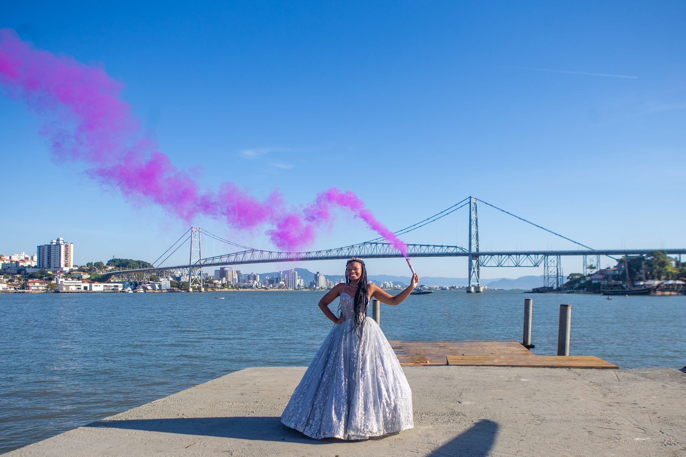
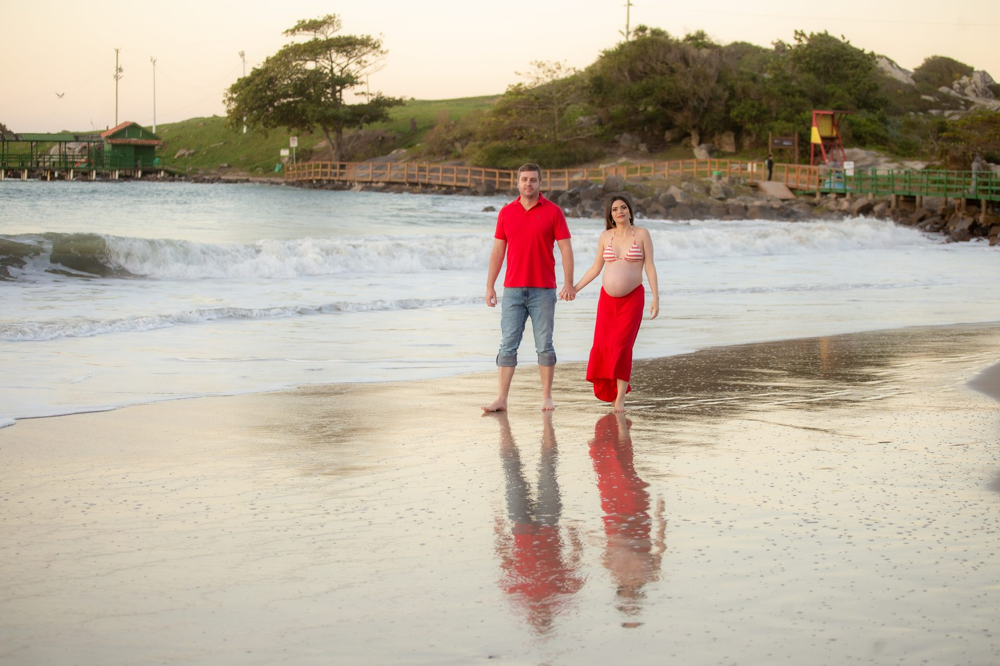
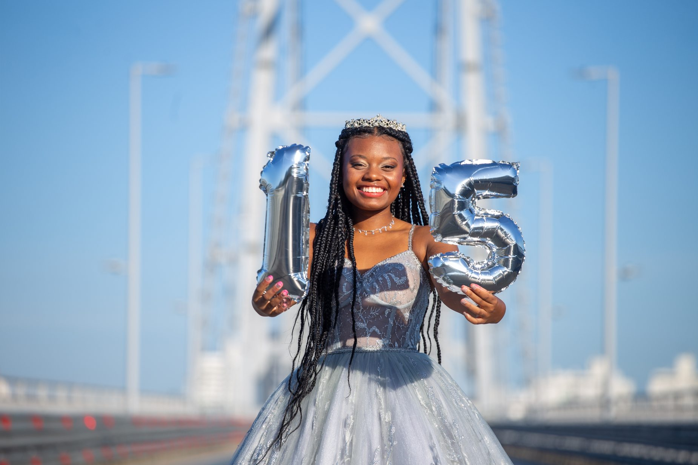
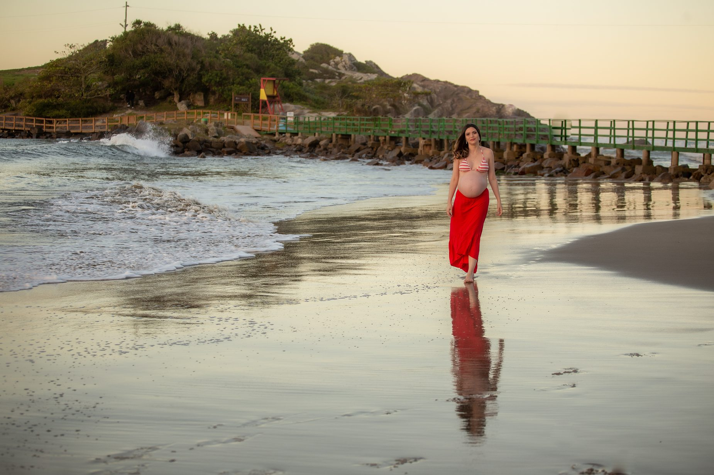
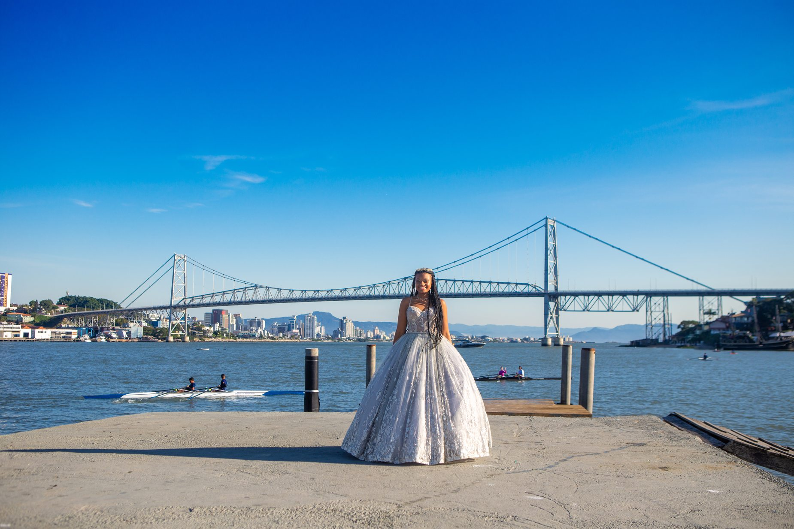
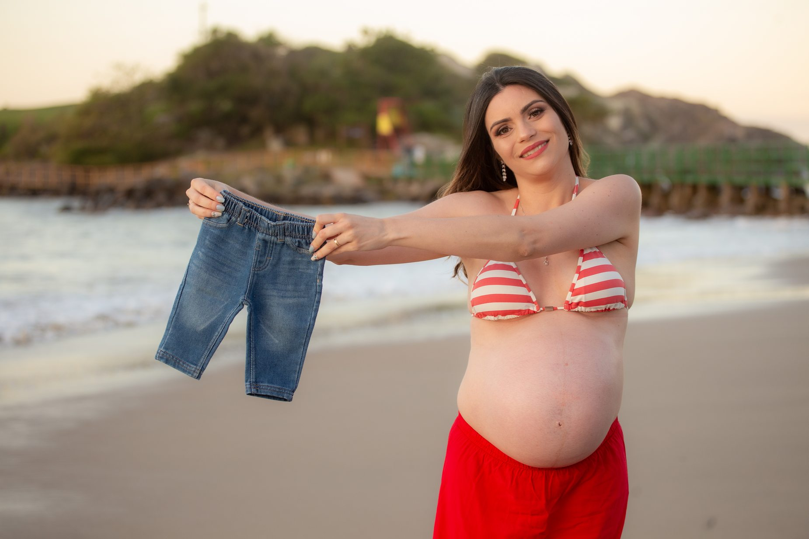

Momentos que
permanecem.
Um olhar sensível para registrar histórias, encontros e momentos que merecem ser lembrados.
Conheça meu trabalho ↓
O olhar de Rafael.
Fotografar é mais do que registrar uma cena. É reconhecer o valor de cada história, de cada encontro e de cada detalhe.
Em Florianópolis, Rafael Fotografia realiza registros de celebrações, ensaios e eventos, unindo atenção aos momentos espontâneos e cuidado com a composição de cada imagem.
Acompanhe no Instagram ↗Cada história, um olhar.
Fotografia para fases da vida, celebrações e encontros que merecem ser lembrados.
Gestantes
Ensaios delicados, naturais e cheios de significado.
Ver mais15 anos
Retratos e momentos marcantes de uma nova fase.
Ver maisFamílias e retratos
Conexões e momentos espontâneos para guardar.
Ver maisTambém realiza coberturas de eventos e cerimônias institucionais. Consulte a disponibilidade e solicite referências específicas para esse tipo de trabalho.
Histórias em imagens.
Uma seleção de trabalhos reais do acervo de Rafael Fotografia — ensaios de gestante, 15 anos e família.








Sua história merece um registro à altura.
Conte sobre seu evento ou ensaio. Vamos conversar sobre a melhor forma de eternizar esse momento.
Solicitar orçamento no WhatsApp ↗Vamos criar algo memorável?
Florianópolis • Santa Catarina